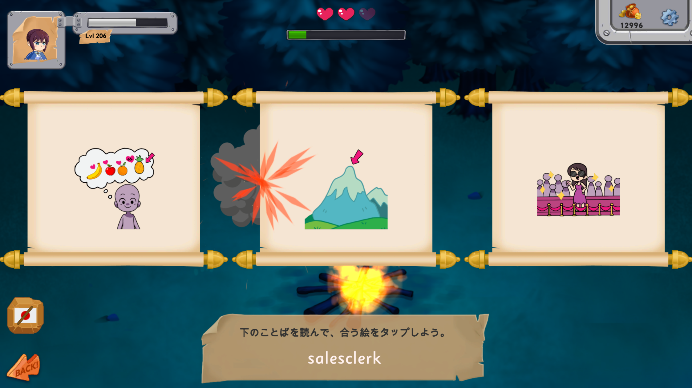
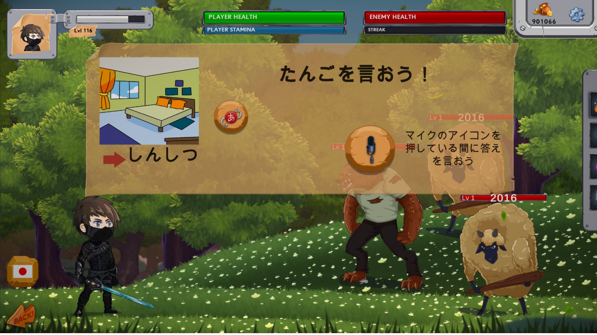
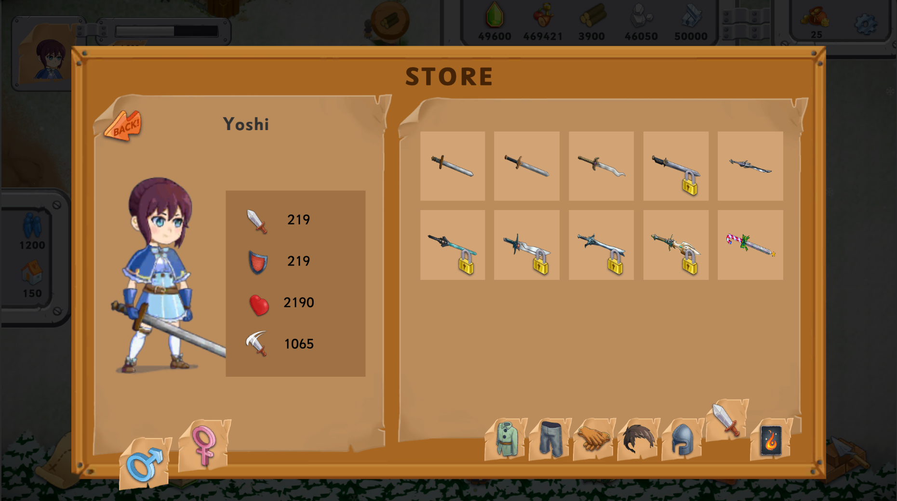
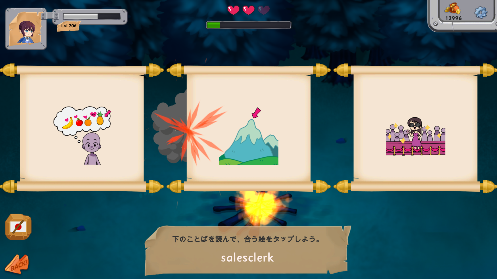
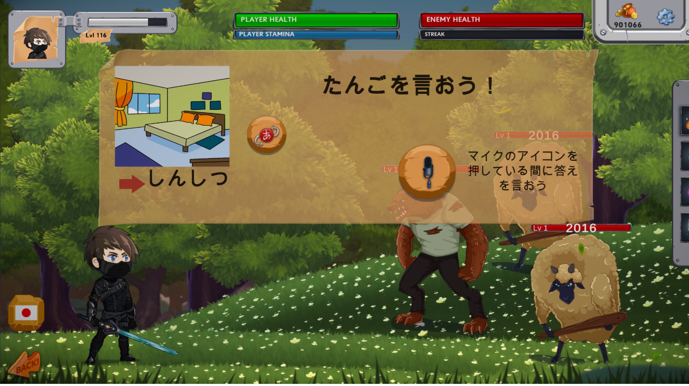
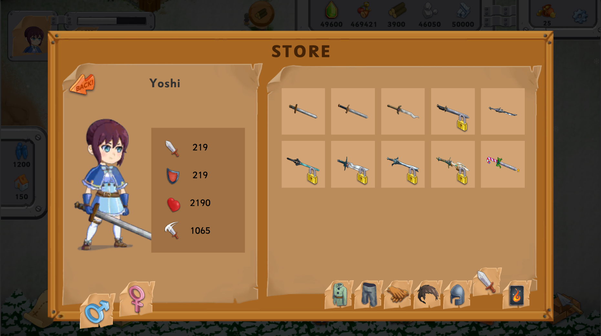

The Gamerize
Dictionary
Started out as the junior developer on this project. Eventually I was able to take on the lead developer role, becoming responsible for maintaining and expanding upon the entire codebase. I have also worked alongside our client in designing and implementing many new features. I am now working on newer projects but my technical expertise and client facing skills has resulted in me continuing to managing the development team along with feature planning. Watch the video below, where I go in depth about the various different systems in Gamerize.
 





The Gamerize Dictionary presented many unique challenges which greatly helped in the development of many various skills which include technical, creative, design and client facing skills.
Web requests, data serialization and asynchronous code:
We have a backend made using Django which the app heavily relies on as has 10,000+ words each with their custom images and voice overs along with various other features such as the ability for teachers to assign material to the students, player data backups, bug reports, adventure data and much more. This really gave me an opportunity to understand and develop a fairly large codebase that revolved around web based data. I was able to become very comfortable with integrating backend APIs using Unity web request, create data models that catered for the data being received, convert raw audio and image data into audio clips and sprites respectively through hand written libraries. Furthermore I got some experience with using Django along with postman.
Design Patterns:
I made use of various design patterns for different parts of the codebase. These include Observer, Flyweight, Scriptable objects, Singleton, State and more.
Debugging:
Perhaps one of my most valuable skills would be my ability to identify and resolve some of the most elusive bugs that plagued the project since it's inception. Many of these included bugs that were a result of very specific conditions resulting in an edge case causing problems ranging from a building disappearing to a player losing their data which was a critical problem. The nature of the bugs were such that they did not happen 999/1000 times, making them very difficult to identify. Such bugs also forced me to have a thorough understanding of every aspect of the codebase to then be able to draft possible vulnerabilities where an edge case might happen under certain conditions. Have resolved most of the bugs exisiting bugs and have reduced the rate of bug reports by about 80%.
Visual Effects and Animations:
I was able to get hands on experience with making visual effects using shader graph such as a snow shader, a freezable flowing river, adding snow to a 2d tree sprite on it's surfaces by using the fact that tree and vegetation sprites are generally lighter in color from the top. Furthermore I made many particle effects which include spell effects, waterfall simulations, butterflies, leaves, attacks, snowfall and many more. I also worked with unity animation blend trees, animation layers along with intergrating spine animations, debugging and modifying animation data/events.
Game Features:
I have modified or worked with nearly everything in the game along with many features that I added independantly. A few of them include:- Question answer games section.
- Dynamic game type adjustment based on html tags in questions.
- RPG battle weakness resistance system along with spells and answer streaks.
- Interactive tutorial and story.
- Dynamic weather.
- Visual Overhauls.
- Eggs and companion pets.
- Automated bug report system.
- Wizardry mini game.
- Custom audio loader.
- Unity Analytics.
- And many more.
Client Facing and Design:
Have actively taken a lead role in client communication and sprint plannings. Furthermore I have taken an active role in designing upcoming features based on student feedback and understanding what our users would enjoy.